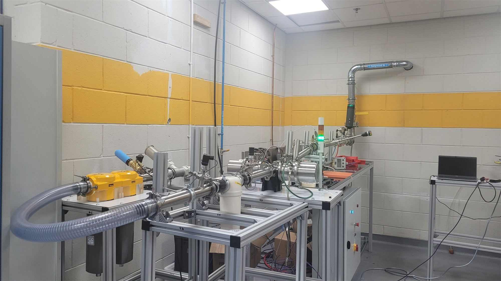
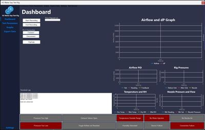
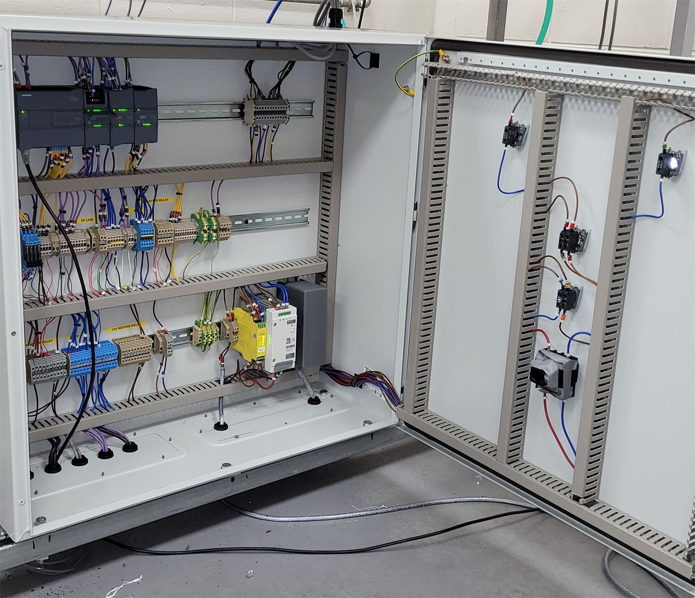
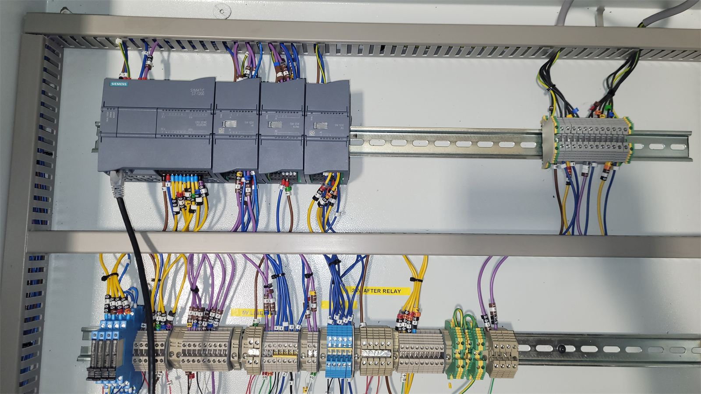
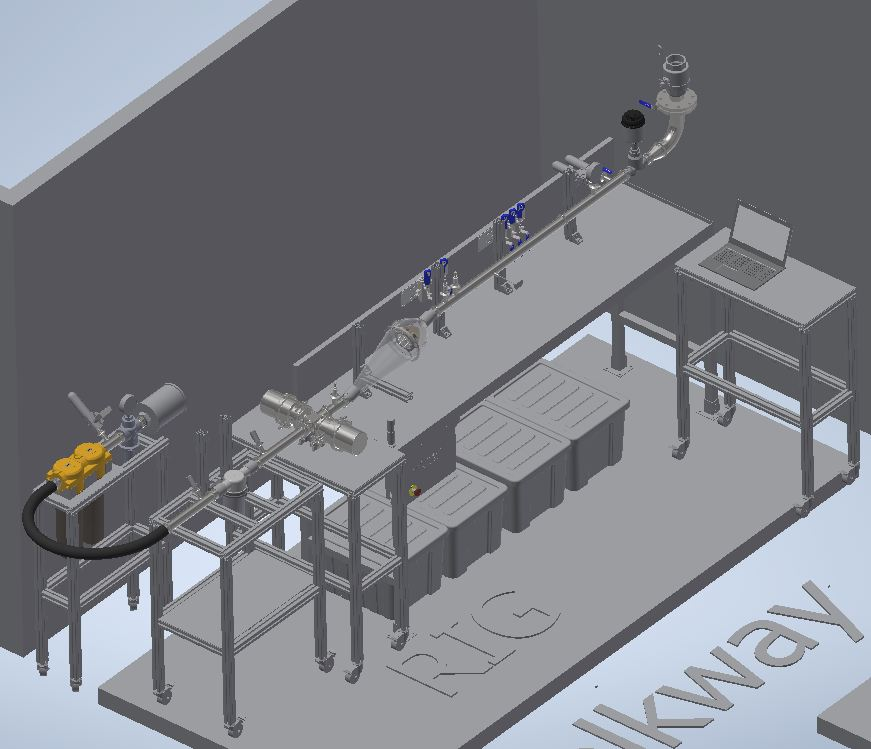
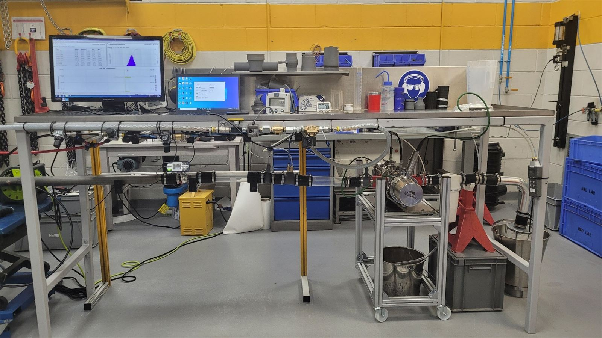

Parker Hannifin · Design intern · 6 months · £15k
Gave Parker Hannifin a way to test heavy-duty hydrogen vehicle filters in-house at full flow. As an intern, I led the £15k rig from concept to HSE approval in six months, and it went into service on site.

Capability
Doubled the test flow
From 5,000 L/min on the first version to an unprecedented 10,000 L/min at 2 bar.
Ownership
Led as an intern
Concept to HSE approval in six months, managing suppliers and manufacturers.
Automation
Remote, automated tests
PLC control and a custom HMI measured filter efficiency remotely.
Documentation
Built to be approved
356-part assembly, 112 drawings, schematics, SOPs and risk assessments.
Parker Hannifin needed to measure how well water separator filters for heavy-duty hydrogen vehicles perform at real operating airflow.
The rig had to measure pressure, water flow, particle size, temperature and airflow automatically, safely and repeatably, at flows high enough to need HSE approval.
Led the project end to end: ideation, design, prototyping, sourcing, build, wiring and certification. I produced a 356-part Inventor assembly, 112 engineering drawings, and the pressurised system and electrical panel schematics and wiring diagrams.
I wrote the Siemens S7-1200 PLC program in TIA Portal, designed the HMI in Figma and built it in C# WinForms, and wrote the SOPs and risk assessments that secured HSE approval.
The team gained a fully automated, remotely operated efficiency rig, approved by HSE and running on site at 10,000 L/min, double the flow of the first version.
It supported the company's 12-month hydrogen engine humidification and dehumidification project.
| Max flow | 10,000 L/min at 2 bar |
|---|---|
| Budget | £15k |
| Controller | Siemens S7-1200 PLC, programmed in TIA Portal |
| HMI | Designed in Figma, built in C# WinForms |
| CAD | Inventor, 356 parts, 112 drawings |
| Measures | Pressure at multiple points, water flow, particle size, temperature, airflow |
| Instruments | Malvern particle analyser |
| Structure | Aluminium extrusion frames, hygienic stainless piping for quick, high-pressure filter changes |
| Duration | 6 months, design lead |

From CAD to commissioning
I took the rig from an Arduino-controlled first version to a PLC-controlled, pressurised rig with twice the flow.
| Version 1 | Version 2 (in service) | |
|---|---|---|
| Control | Arduino | Siemens S7-1200 PLC, my TIA Portal program |
| Max flow | 5,000 L/min | 10,000 L/min at 2 bar |
| Pressure | Unpressurised | Pressurised system |
| Water | No reclamation | Water reclamation system |
| Piping | Standard piping | Custom hygienic piping, interchangeable and sealed |
| Operation | At the rig | Remote control through my HMI |




Contact